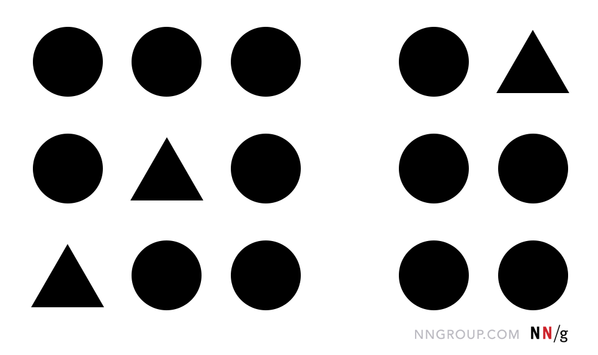
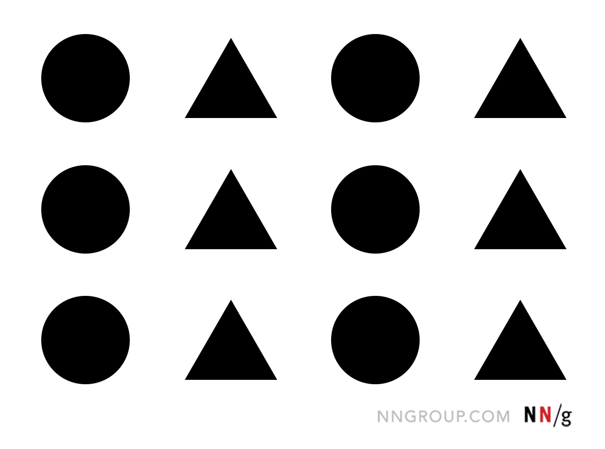
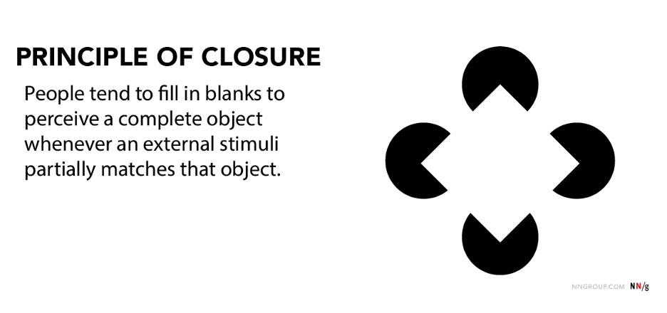
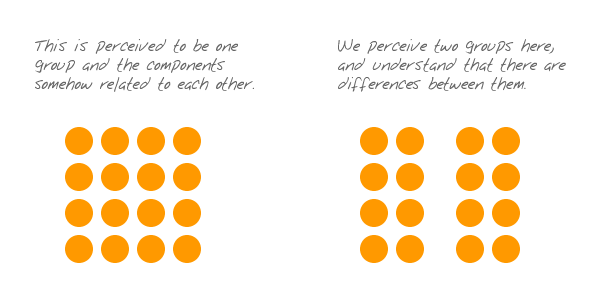

Ley de Proximidad
Los elementos cercanos tienden a percibirse como parte de la misma forma, creando grupos visuales naturales.
Cuando los objetos están próximos entre sí, nuestro cerebro los agrupa automáticamente. Este principio es fundamental en el diseño de interfaces, donde utilizamos el espaciado para crear relaciones visuales claras entre elementos relacionados.

Ley de Semejanza
Los elementos que comparten características visuales similares se perciben como relacionados o parte del mismo grupo.
La similitud en color, forma, tamaño o textura crea conexiones visuales. En interfaces web, utilizamos esta ley para crear consistencia visual y ayudar a los usuarios a identificar elementos del mismo tipo.

Ley de Continuidad
Los elementos dispuestos en una línea o curva continua se perciben como relacionados, siguiendo un patrón fluido.
Nuestros ojos siguen naturalmente las líneas y curvas. Esta ley es esencial para crear flujos de navegación intuitivos y guiar la atención del usuario a través de la interfaz de manera orgánica.
Ley de Cierre
Nuestra mente completa automáticamente las formas incompletas, creando una figura cerrada a partir de elementos parciales.
El cerebro "rellena" los espacios vacíos para crear formas completas. En diseño de interfaces, podemos usar formas incompletas para crear elementos visuales interesantes sin sobrecargar la vista.

Ley de Figura-Fondo
El cerebro distingue naturalmente entre el objeto principal (figura) y su entorno (fondo), creando una jerarquía visual.
Esta separación es fundamental para crear interfaces claras. Utilizamos contrastes de color, sombras y espaciado para distinguir elementos importantes del fondo y crear una jerarquía visual efectiva.

Ley de Simetría y Orden
Los elementos simétricos se perciben como más estables y organizados, creando una sensación de equilibrio visual.
La simetría transmite estabilidad y confianza. En interfaces web, utilizamos layouts simétricos para crear sensación de orden y profesionalismo, especialmente en sitios corporativos o aplicaciones serias.

Ley de Región Común
Los elementos que se encuentran dentro de una misma área o región se perciben como un grupo unificado.
Utilizar contenedores, cajas o áreas delimitadas ayuda a agrupar información relacionada. Es la base de las tarjetas, paneles y secciones que estructuran el contenido de manera lógica.

Ley de Destino Común
Los elementos que se mueven o apuntan en la misma dirección se perciben como relacionados y parte de un mismo grupo.
El movimiento y la dirección crean conexiones visuales potentes. En interfaces digitales, utilizamos animaciones coordinadas y elementos direccionales para guiar la atención y crear narrativas visuales cohesivas.
